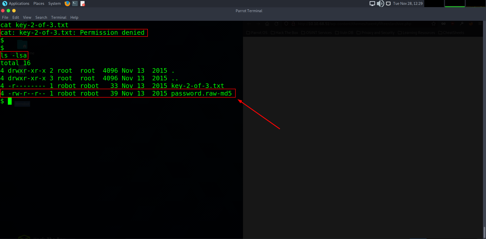

Mr. Robot CTF Tutorial
Welcome back! today we will be taking a look at the well known capture the flag challenge based off the hit TV show Mr.Robot hosted on TryHackMe where we will attempt to hack into Mr. Robots webpage and find the flags required to complete the task.
Once connected to my TryHackMe VPN I will start the machine and connect to the IP address that is revealed on the challenge page.
I am presented with a very interesting splash screen containing links to different pages feature theme elements of the show. To begin investigating the landscape i decide to check the hint designated for the first flag. This hint is called “Robots” which could indicate that there is a robots.txt page that could contain information to take us to the next step. There are a couple of ways to do this either by using an automation tool detect directories or manual entry, but for now we will manually add the extension to the URL to see if it will direct us to a robots.txt page.
Now we are getting somewhere! By adding robots.txt we are brought to a hidden directory containing other url extensions. One of those extentions includes one that says “key-1-of-3.txt” which we can presume is where are first key will be. So like we did with robots.txt, let’s try add that extension to the end of our URL to bring us to the directory we need.
Bingo, we have found our first flag!
After inputting our first flag, let’s take a look at flag number 2’s hint. This hint says: “There’s something fishy about this wordlist… Why is it so long?” going by this hint, it seems to be referring to some sort of wordlist or dictionary of some kind. What we noticed in our robots.txt directory was another directory titled “fsocity.dic” let’s go back and try adding that to our URL now and see where it takes us.
We have bee prompted with a request to download a dictionary file. Go ahead and save the file to your Downloads folder. Usually when we are given a dictionary file in a Capture The Flag, this can signify that our next challenge will require some some sort of brute-forcing, usually a login portal of some kind.
To see if there is a login portal we can work with, I used GoBuster to enumerate directories on the website. The results produced what looks to be a wordpress login page. Let’s try navigate to it.
We can see that we are faced with a standard login page. To begin brute forcing login credentials, we will need to intercept and manipulate an input request. By doing this, we will open up BurpSuite and use a browser plugin called FoxyProxy, which is a common extension used to intercept burp requests. So let’s go ahead and attempt to use fake login credentials to create a captured request.
Remember the dictionary list we downloaded? we are going to use that list to perform a brute-force attack using Hydra. Notice when we entered the fake user name and password we got an error response stating ERROR: Invalid username? this is in itself a vulnerability as it can be used to enumerate usernames. This gives us a hint as to what information to focus on first which will be the password.
So to take advantage of that error we are going to first assign (-L) our dictionary list and then assign a static username (-p) and then we will type the name we want to use. In this case, we are going to go with the username test. Next we assign our target IP (10.10.196.204), our post request from Burp (http-post-form) and the login page itself that we will be working on (/wp-login.php)
Next to add to the string will be the parameters (log=^USER^&pwd=^PWD^) which will be where our dictionary will making inputs, then we will add the error we received that we know is vulnerable, being Invalid Username. We add this so we can tell hydra top avoid those errors and focus only on the prompts that succeed. Lastly, we will assign our thread count and then execute the command.
Bingo, we have a username. Now lets try manually inputting that username with more random password attempts and see if the response will give us any more juicy hints.
When typing in Elliot and a random password, we can see that we get ANOTHER vulnerable error message telling us that the password we used for that username is incorrect, indicating to us that the username is correct - This is half the battle, now it is time to enumerate the password and try crack this thing.
We are going to run the hydra command again only this time we are going to assign a static username (-l) and (-P) for to focus on enumerating the password now. The capitalization of the commands signify the priority of which part of the target you are seeking to enumerate. The last part that we will change will be the error command we got back regarding the password (The password you entered for the username) - This may take quite some time and if you are not using premium, it could take days depending on the wordlist, so to speed things up just for this demonstration I can tell you that the password was Elliots work badge number from the tv show, which is: ER28-0652
After typing the credentials into the Wordpress Admin login page we can see we now access to Elliots Admin Panel. This is a critical threat as this means that we have access to the website itself and it’s functions through the editor tab. This can be manipulated for uploading the likes of a reverse shell to gain access to the web server it is hosted on. Lets investigate it.
What we will do is first set up and start a net cat listener on port 53 for when we implement a reverse shell into the wordpress editor. That way once the reverse shell we set up is triggered by navigating to the website it is on, the listener should be able to detect the reverse shell connection and relay the host information to us giving us access. To set up our listener properly we will type rlwrap. This will give us the ability to use tab completion. Then we will input NC for net cat, and finally -lvnp which stands for Listen, Verbose, reverse-Name look-uP and then designate the port to listen on that will be included in the reverse shell specifications. Port 53 is the DNS port and is rarely blocked on most firewalls so it will be a good avenue to use for this exercise regarding a web server.
(Note: if you do not have rlwrap installed by default in your kali or parrot box, you can download it by typing sudo apt install rlwrap into your terminal )
While our netcat listener is listening, we will now go on the hunt for the perfect reverse shell template that to use for this task. By doing so we are going to open a new tab and begin typing queries such as php reverse-shell and see what comes up. In our search, we have come across a php reverse-shell that was uploaded to github. Click on the reverse-shell.php file and render as RAW text. Once done, we can then copy/paste the shell back into our wordpress editor.
We can implement this shell on pretty much any page, but not every page will act or render the same. To prevent any unnecessary front-facing damage that could blow our cover, we will upload this shell to more passive page, such as in archives or a 404 error page. For this test we will choose the archives page, as even though the 404 page is a less common page seen on a website, it is still seen more than it would be the archives page.
Once the shell template has been pasted in to the archives editor, we are going to need to change two things: our host IP and the port that our net cat listener is listening on which will be 53. Once updated we can then press update file.
To execute the reverse shell that we have just uploaded to the editor we are going to want to open a new tab and navigate to that archives URL The URL for this is:
[http://10.10.13.23/wp-content/themes/twentyfifteen/archive.php](http://10.10.13.23/wp-content/themes/twentyfifteen/archive.php)
As we can see doing this triggered the shell script and gave us direct access to the host. To very we have user access to the host we can type whoami to see the current user is daemon and hostname to verify the host name is linux.
Fist thing we should always try when getting user access to a host is to fully investigate the user account we are on including their home directories and folders. Doing so in this case, we can see that when changing directory into /home we can see one user in there called Robot. When we then cd into that robot directory we come across two files. One is a txt file saying key-2-of-3.txt to view the contents of this we can type: “cat key-2-of-3.txt”

Uh oh, it seems we have ran in to a problem. When trying to cat out the txt file, we are faced with a permissions denied prompt. This means we do not have the user privileges to read or write to the text file at all. So by using the command ls -lsa we can list out the file permissions for each user. We can see that the txt file has the read (r) permissions removed (-) from it for the robot user and other groups from accessing it (being us as daemon), however.. we ARE able to read the file labelled password.raw-md5 which could lead us to clues on how to access that txt file. So let’s cat out that file..
Let’s go! it appears we have a md5 encrypted backup of the user ‘robot’s password. This sucks for them but great for us as it means we can now save it to our notepad and name it md5.hash to then be used to crack later.
To crack the MD5 file type we are going to use a well known tool called John The Ripper. John is a CPU powered cypher and password cracking kit. We will also be using the dictionary wordlist from earlier in this exercise against the hash also.
{Note: If you are not told the hash type, you can use a tool installed already called hash-identifer. This will analyze the hash string you put in and will give you back the type for john.}
In just a few seconds we were successfully able to identify the hash to be password: abcdefghijklmnopqrstuvwxyz, as we all know is not a very secure choice for a passphrase!
Before we pivot to another user account, we will first make our shell a bit more interactive than it is. Similar to step 15, this is an little addition that will make our shell feel more native like command history, tab completion etc. The command to update while in the reverse shell is:
python -c 'import pty;pty.spawn("/bin/bash")'
Now that we have an interactive shell we can type su robot to attempt to login as the robot user. A prompt will pop up saying enter password. This will be the password we decrypted from the md5 hash earlier.
Now that we have access o the user Robot we can now change directory into /home and cat out the txt file with our new permissions.
For the final step, we are required to escalate permissions to root user which will give us access to the entire host system. To do this, we can run privilege escalation scripts or look for SUID binaries to aid bypassing procedures. SUID binaries have the ability to set you as a root user while running. Lets try find any SUID binaries that are running in an unusual way. To do this, we can run this command:
find / -perm +6000 2>/dev/null | grep '/bin/'
Once we run the find command we are given a list of binaries and one ino partocualr stands out that - the nmap one. To verify that we can use this to break out of the binary and become root, we can use a website called https://gtfobins.github.io/ On there we can search for nmap and it will give us an interactive mode script as well as a !sh to execute it.
Once we execute the above commands and type whoami, we can now confirm that we have root privileges on the host.
Now that we are root we can change directory into root and list our options. Here we can see our third flag key-3-of-3.txt which we can cat out for are final flag. I hope you all enjoyed this CTF tutorial and hopefully learned a thing or two. Join me again for future tutorials.
- Seranox.